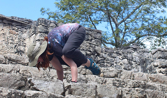
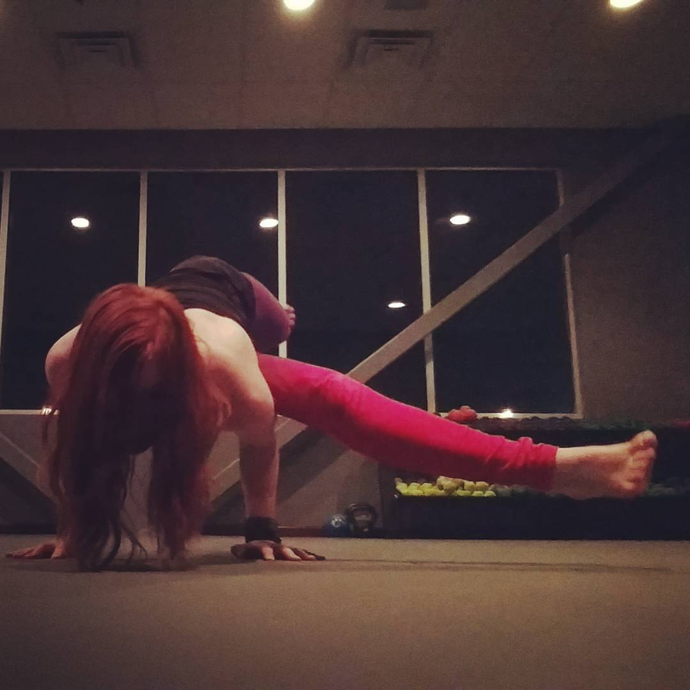
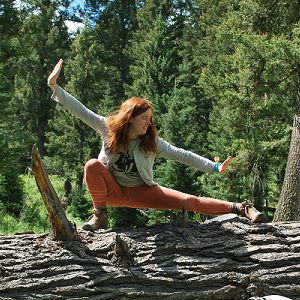
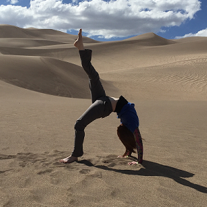
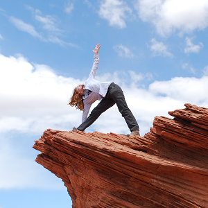

Workshops
I would love to teach a workshop at your training or studio. I can share a workshop I've taught in the past or work with you to develop a new workshop.
|  |
Arm Balance FoundationsThis workshop focuses on the foundations required for strong arm balance poses. More time is spent on practices that will make arm balances more accessable than on the arm balance poses themselves, but there will still be plenty of time to play! Bakasana (crow), parsva bakasana (side crow), and eka pada koundinyasana one (epk1) will all explored. This workshop is for all levels! |
Advanced Arm BalancesThis workshop focuses on more advanced arm balances. Students will play with eka pada koundinyasana one (epk1), eka pada koundinyasana two (epk2), astavakrasana (eight angle pose), and parsva bhuja dandasana (grasshopper), as well as simpler poses that will help them move deeper into these advanced poses. This workshop is best for students that have had some arm balance experience before, but proficiency is absolutely not required! |
 |
  